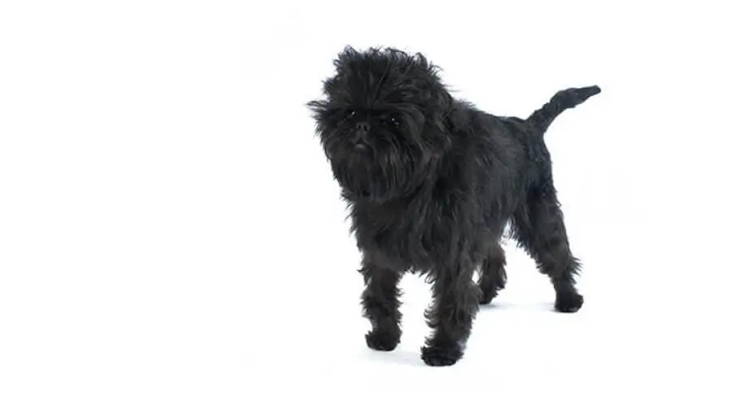
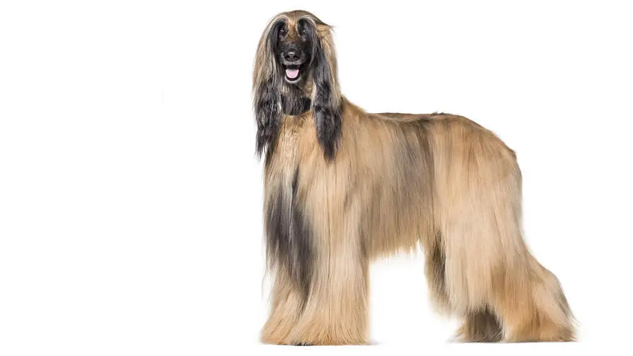
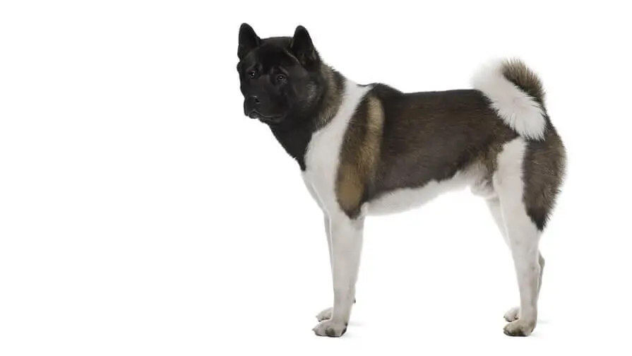

Affenpinscher
Actualizado: 25/11/2023
Pese a su apariencia de terrier y su traviesa expresión similar a la
de un mono, el Affenpinscher es un perro de compañía que en edad
adulta mide entre 24 y 28 cm de la altura (contando desde las patas
hasta la parte superior de la escápula) y pesa unos 3 o 4 kg. Su
pelaje es áspero y suele ser negro aunque, a veces, también presenta
un leve tono gris.

Afgano
Actualizado: 25/11/2023

El Afgano es un perro de aspecto noble que luce con orgullo y
elegancia su largo y brillante pelaje, que es su mayor atractivo. Es
una raza grande con una altura de 68 a 74 cm en la edad adulta para
el macho y de 63 a 69 cm en el caso de las hembras. Su magnífico
pelaje puede ser de cualquier color, desde negro a plateado, pasando
por todos los colores y combinaciones posibles. El peso medio es de
25 kg aproximadamente con un mínimo de unos 20 kg y un máximo de
unos 27 kg dependiendo del sexo y la constitución del perro.
Akita japonés
Actualizado: 25/11/2023
El Akita es un perro grande y fuerte de gran esencia y dignidad. El
porte orgulloso de su cabeza se ve realzado por unas orejas pequeñas
y unos ojos oscuros. Son impresionantes gracias a su pelaje grueso y
afelpado, de color rojo leonado, sésamo, atigrado y blanco. Los
machos adultos miden entre 64 y 70 cm y las hembras, entre 58 y 64
cm. El peso puede estar entre 34 y 50 kg.
